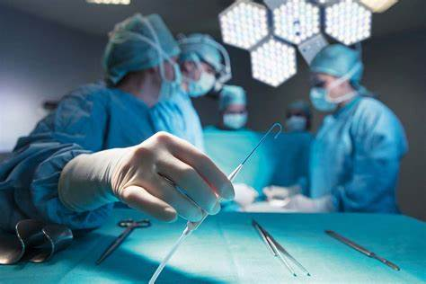

Somos uma clínica que busca proporcionar aos nossos pacientes saúde, beleza, longevidade e autoestima de modo único e individualizado. Fundada em 2007, estamos em um dos pontos mais nobres do Rio de Janeiro.
Todos os profissionais são rigorosamente selecionados e possuem título de especialista pelas sociedades de máxima credibilidade e fiscalização de suas áreas de estudo reconhecidas pelo Conselho Federal de Medicina, requisito primordial para atuar na clínica. O corpo clínico também é conhecido por sua participação constante em congressos nacionais e internacionais a fim de se atualizar e recolher conhecimentos de novas técnicas e tecnologias, que serão oferecidas aos pacientes.
A Clínica de Cirurgia Plástica tem como principal filosofia proporcionar qualidade de vida aos seus pacientes, atribuindo a si a função de zelar pela beleza, saúde e bem estar de cada um de seus pacientes